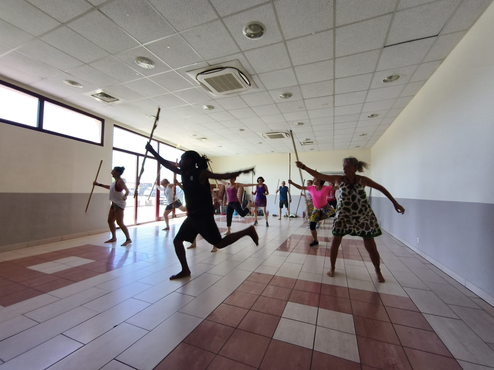
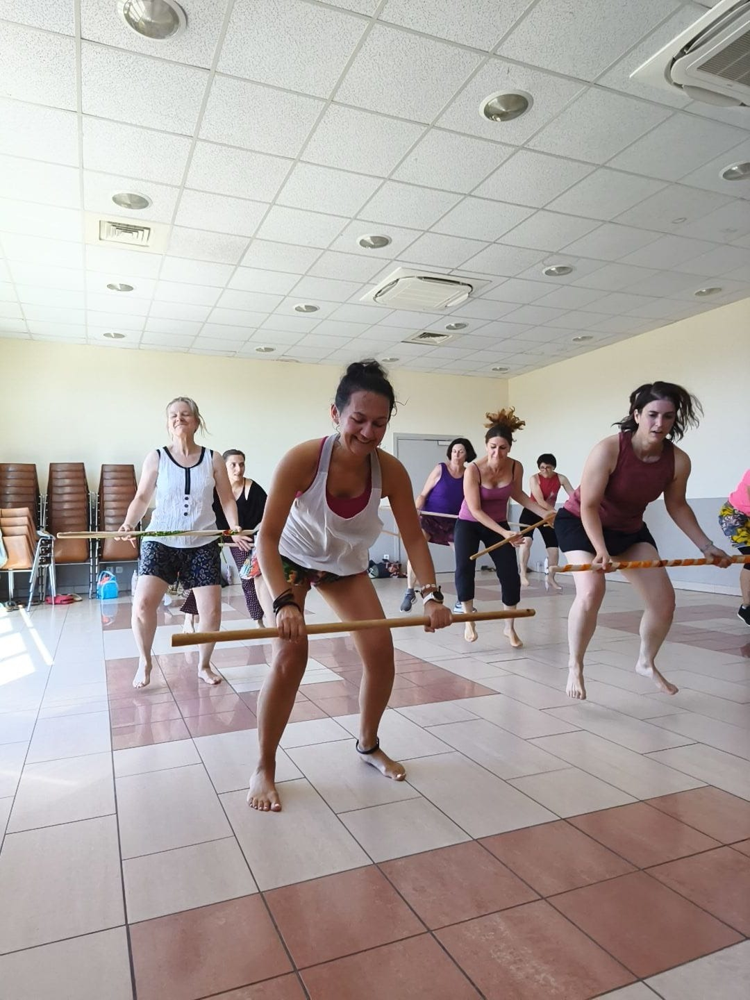

Agenda FACIG
Stages de danse africaine & animations
Danser ici, pour agir là-bas.
Des rendez-vous ponctuels autour de la danse, des percussions et du partage, à Rosheim et plus largement en Alsace.
Prochains rendez-vous
À l'agenda
Cette page est conçue pour évoluer facilement au fil de la saison. Les nouveaux stages apparaissent ici dès leur publication.

Au-delà des cours
Danser, découvrir, rencontrer
FACIG Awâllé organise des stages et participe à des animations culturelles autour de la danse et de la musique africaines. Les lieux et les formats varient selon les projets.
Ces temps forts permettent d'accueillir un public plus large, notamment depuis Rosheim, Obernai, Strasbourg, Sélestat et les environs.
Un stage en images
Krautergersheim — juillet 2026
Un temps de danse et de partage avec Cyrille et Ada, autour des rythmes et des danses d’Afrique de l’Ouest.

Pour l'équipe FACIG : pour ajouter ou modifier un événement, il suffit d'éditer le fichier
assets/js/events.js. Les événements sont ensuite affichés automatiquement ici et sur la page d'accueil.